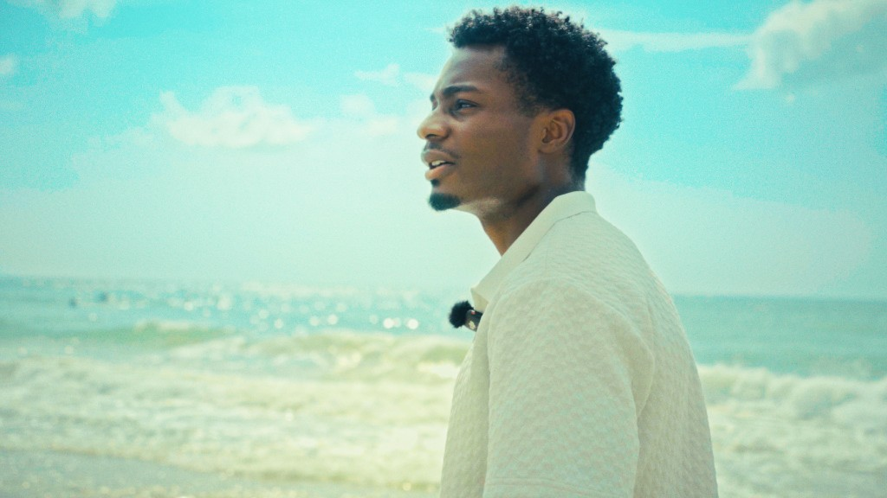

Documentary · Wilmington · City permit
Welcome to Wilmy
A feature-leaning look at Cape Fear surf and beach culture — made as destination storytelling for visitors, and as a working relationship with the businesses that define the coast.

The film
Not a brochure. A portrait.
Welcome to Wilmy follows the people who make Cape Fear feel like itself — surfers, shop owners, board builders, beach-day regulars, and the quiet rituals between dawn patrol and last light.
It is shot under a City of Wilmington permit, with a festival cut aimed at Cucalorus. The tone stays observational and warm: salt, wood, caffeine, and the small economies that keep a beach town honest.
Runtime target sits in the feature-leaning documentary band, roughly 45 to 70 minutes for the festival cut, with short destination cutdowns for tourism partners and social.
Why a documentary sits on this slate
It keeps a crew working between interactive productions, it builds a real relationship with the local economy the commercial unit serves, and it is the one project on the slate with no branching in it at all — which makes it a useful check that the tools are good for ordinary filmmaking too.
What you’ll see
Threads on the strand.
Three threads, shot as people rather than as postcard footage.
Dawn patrol to last glass
Sessions, board talk, and the people who treat the water like a second schedule.
Shops that define the block
Board shops, cafes, rentals and beach brands filmed as characters, not product placements.
Cape Fear as a character
Ferry light, pier weather, off-season quiet — the shoreline identity held in frame long enough to feel.
For Wilmington
The commercial flywheel.
The documentary builds goodwill and footage; destination packages and brand films turn that into paid work inside the same local economy.
Festival cutA Cucalorus-ready narrative documentary.
Tourism cutdowns30–90 second place films for boards and venues.
Brand filmsSpark and Brand packages for shops that appear on screen.
Social packsCaptions-ready clips for local accounts.
Status
In motion on the coast.
Interviews and observational days rolling as schedules and weather allow. Additional shops can still request inclusion.
City of Wilmington permit
Production access for public coastal storytelling under local permit — not guerrilla tourism B-roll.
Interviews & observational days
Subject outreach and coast coverage continuing through the season.
Festival assembly
Picture lock toward Cucalorus submission windows, then tourism and brand derivatives for participating businesses.
Seen on screen? Let’s talk.
If your Wilmington or Cape Fear business appeared — or should — destination packages and brand films are open now.